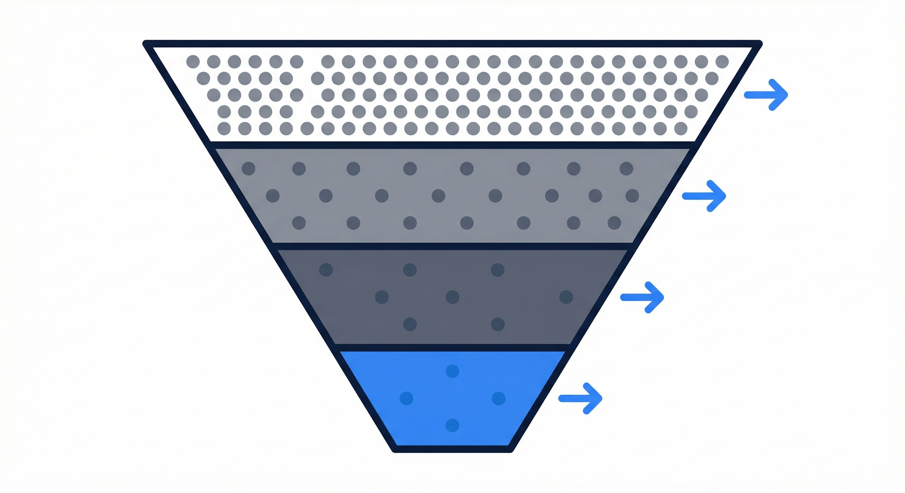
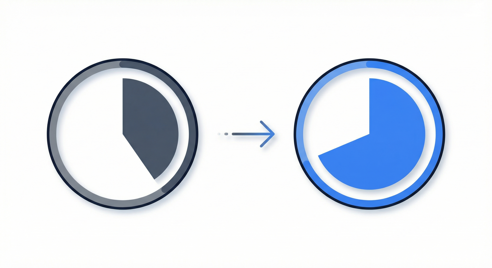
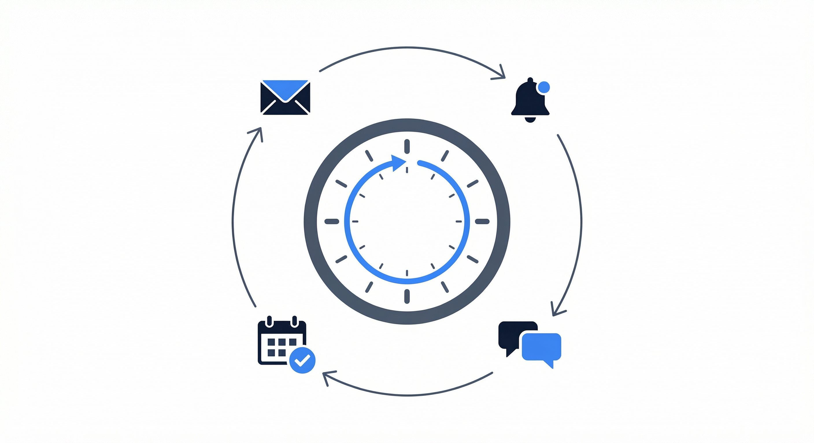

AgenticDeploy deploys an AI workforce that maximizes webinar attendance, converts no-shows into buyers, and keeps your funnel running 24/7.
That is not a traffic problem. That is a follow-up problem.
Between registration and show time, most businesses send a couple of generic reminders and hope for the best. Meanwhile, your registrants are getting pulled in a dozen directions. They forget. They lose interest. They find something else.
Every empty seat was a paying customer you already had in the door.

Your operations worker manages the entire pre-webinar experience. Confirmation sequences. Content teasers that give value before the event. Personalized reminders. Day-of messages that build excitement instead of just saying "don't forget."
When your registrants feel invested before they sit down, they show up. And they stay.

What about the 50 people who watched the replay and never decided? The 30 who showed up but left early? The 20 who registered and never attended?
Your operations and content workers build segmented post-webinar sequences based on behavior. Who attended. Who watched the replay. Who engaged. Who dropped off. Every segment gets follow-up that speaks directly to where they are.
Between launches, your funnel is basically off. Your email list goes quiet. Your ad spend drops. Your team shifts focus. And when you rev it back up next month, you are starting from cold again.
Your AI workforce runs your evergreen promotional engine. Social content, email sequences, retargeting content, and follow-up. Continuously between launches. So your next launch starts warm.

Your CMO worker monitors funnel performance and identifies weak points. Your content worker implements optimizations. Your operations worker runs the tests.
The funnel gets better every week. Without you personally managing any of it.
Your webinar works. You have proven it converts. The path to more revenue is clear: run it more often, reach more people, convert more buyers.
Your AI workforce manages everything that scales with volume: registration management, promotional sequences, attendee communications, post-event follow-up, and performance reporting. Across every run, automatically.
Book a 15-minute demo and we will map your webinar funnel together.